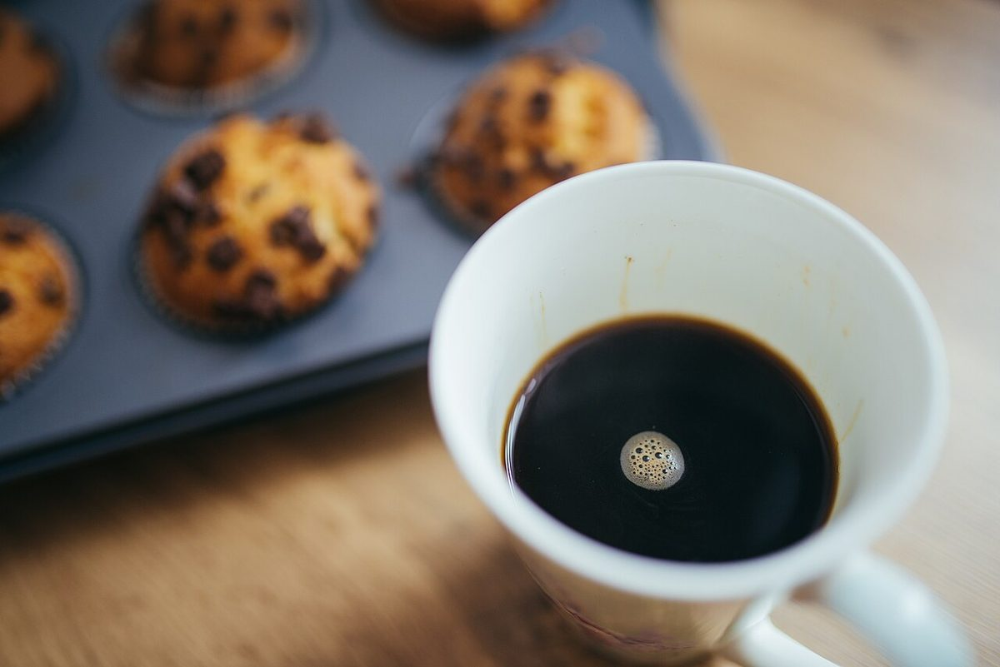

店のこと
店のこと
お店について確認できているのは、所在地・電話番号・Instagramのアカウントだけです。
このページの「想像してみる」部分は、制作側が想像して書いたものです。お店の実際の様子・考え・メニューとは関係がありません。
確認できていること
- 店名は「cafe soramame(カフェ そらまめ)」、業種はカフェ
- 所在地は岩手県久慈市山根町下戸鎖第6地割22-2(〒028-8521)
- 電話番号は 050-6873-5294
- Instagramは @soramame_yamane
- 営業時間・定休日・メニュー・価格・ご予約・駐車場は準備中

想像してみる
丸いものを集めてみました
お店の様子は分かりません。そこで制作側は、カフェという言葉から思い浮かぶ「丸いもの」を集めてみました。カップ、お皿、ガラスの玉、焼き菓子。どれもお店のものではなく、イメージとして選んだフリー素材です。